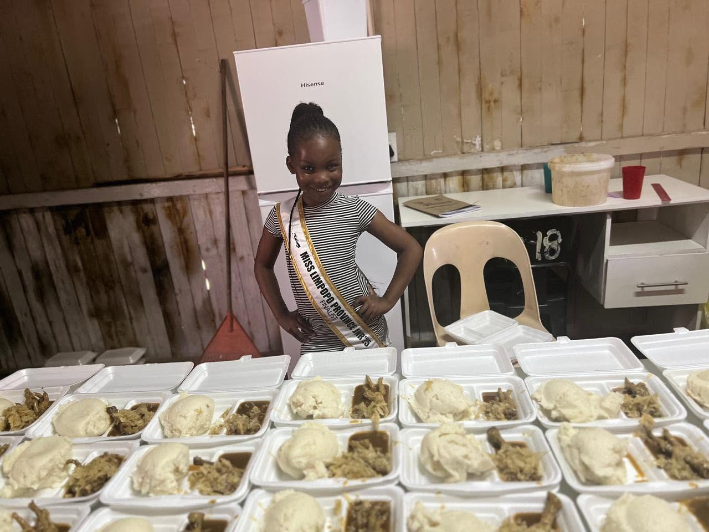
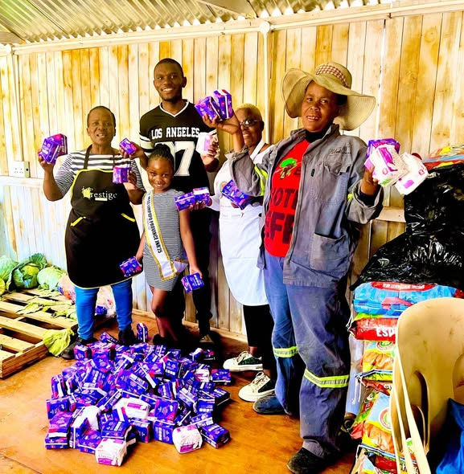
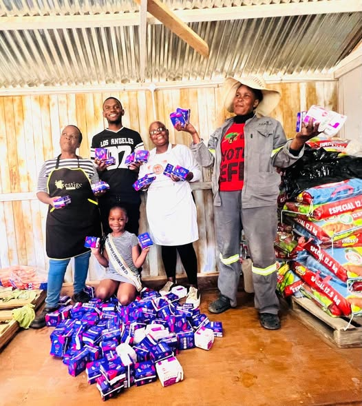
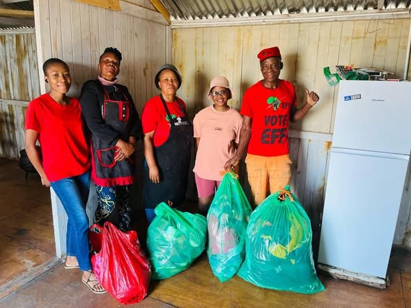
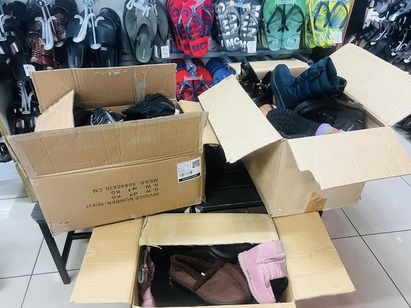

We offer a range of services to support individuals and families in need.
We serve daily hot meals to vulnerable individuals and families. We also provide emergency food parcels to those facing short-term crises, and partner with local schools to feed children who come to school hungry.

We collect and distribute sanitary pads to girls and women who cannot afford them. This program helps keep girls in school and supports women's dignity and health.


We accept gently used clothing and shoes and distribute them to families and individuals in need. Items are sorted, cleaned, and made available during our monthly distribution sessions if available.


Your donations and time make these services possible.
Get Involved